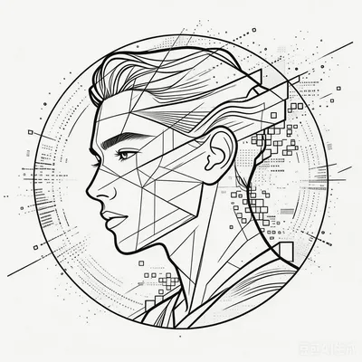

Joke Lin
Personal edition
Fuzhou · China
Joke Lin Research · Experiments · Other lives

01
Open the archive
Working principle
把想法做成可以被打开、被阅读、被记住的东西。
Scroll to enter
01 / About
Ideas are only the beginning. Making is the proof.
02 / Index
The rooms
一组可以进入的页面。每个入口都比一句自我介绍更接近真实的我。
03 / Archive
Still in progress
这不是一份完成履历，而是一张正在生成的目录页。
A life between research and making.
福建农林大学农村发展硕士在读。关注数字技术如何进入乡村产业、治理与日常生活，也持续把自己的兴趣做成可访问的页面。
06open rooms
04notes published
05stories written
03original tracks
Updated
Joke Lin / 01—06
04 / Contact
Make it tangible
Open a
conversation.
如果你也在做一些值得被打开的事，欢迎把它发来。